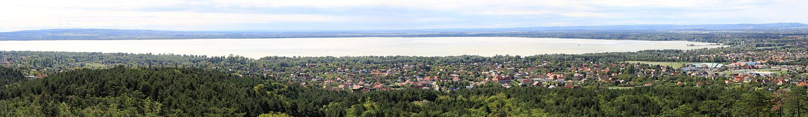

No. 01 — Piackutatás, újragondolva
Háromezer avatar. A teljes népesség arányai. Világos, nyugodt válaszok — hetek helyett napok alatt, megfizethető áron.

Megfogalmazod, mire vagy kíváncsi: termék, ár, üzenet, hír.
3000 MI-avatar — a magyar lakosság arányait követve — reagál, vitatkozik, dönt.
Teljes riport: szegmensek, indoklások, javaslatok, grafikonokkal.
Minden avatar egy statisztikailag felépített „magyar ember”: kora, neme, lakóhelye, végzettsége, jövedelme és értékrendje a népszámlálási arányokat követi. Együtt Magyarország kicsinyített mása — amely akár a napi hírekre is reagál.
Mintaadat — a végleges arányok KSH-adatokból kerülnek beállításra.
Piacméret, célcsoportok, versenytársak és igények feltérképezése napok alatt.
Melyik termékötlet, csomag vagy ár működik? A 3000 avatar válaszol.
Plakát, videó, szlogen tesztelése, mielőtt egy forintot költenél médiára.
Hogyan reagál Magyarország egy mai hírre? Óráson belüli közhangulat-kép.
A kutatás eredményeire épülő, konvertáló weboldal — egy kézből.
Töredékáron, a hagyományos kutatás idejének töredéke alatt.
Számok, szegmensek és — ami a legtöbbet ér — az avatarok saját szavaival megfogalmazott indoklások. Minden riport javaslatokkal zárul.
„Drágának tartom, de ha a gyerekem iskolájában is használják, megvenném.” — avatar #1842, 41 éves nő, Pest megye · Mintaadat
Vásárlási hajlandóság korcsoportonként (18–29 … 75+) — illusztráció
Példa árak — a végleges árazás egyeztetés alatt.
1 kérdéskör, 3000 avatar, rövid összefoglaló
Szegmentált riport, ajánlások, egyeztetés
Kutatásra épülő weboldal kulcsrakészen
Mesterséges intelligenciával működő virtuális válaszadók, akiknek életkora, neme, lakóhelye, végzettsége és jövedelme a KSH népszámlálási arányait követi.
Gyors, olcsó előszűrésre és döntés-előkészítésre ideális. Nagy téttel járó döntéseknél valós mintás kontrollkutatást is javaslunk.
Egyszerűbb kérdéseknél akár órákon belül, teljes riportnál néhány munkanap alatt.
Nem. Az avatarok szintetikusak, statisztikai arányokból épülnek fel, személyes adatot nem tartalmaznak.
Igen — a kutatásból kiderül, mit akar a közönség, és erre építjük az oldalt.
Írd le a kérdésedet, 24 órán belül jelentkezünk egy ajánlattal.
Képek: Wikimedia Commons, szabad licenc — forrásmegjelölés. Minden szám és grafikon mintaadat, az árak példák.